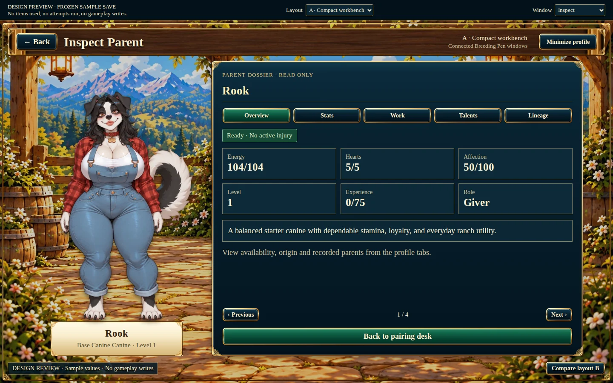
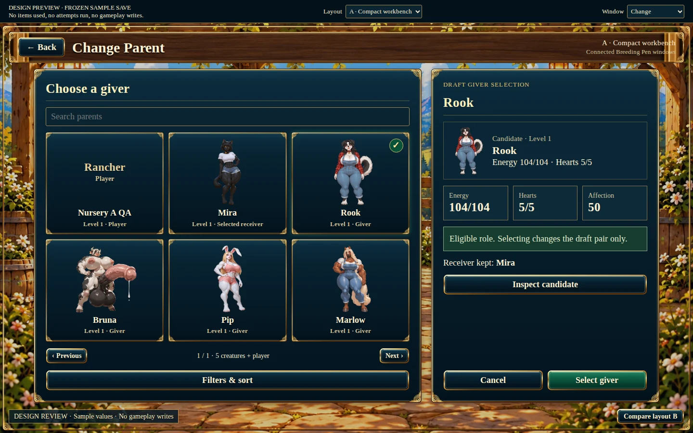
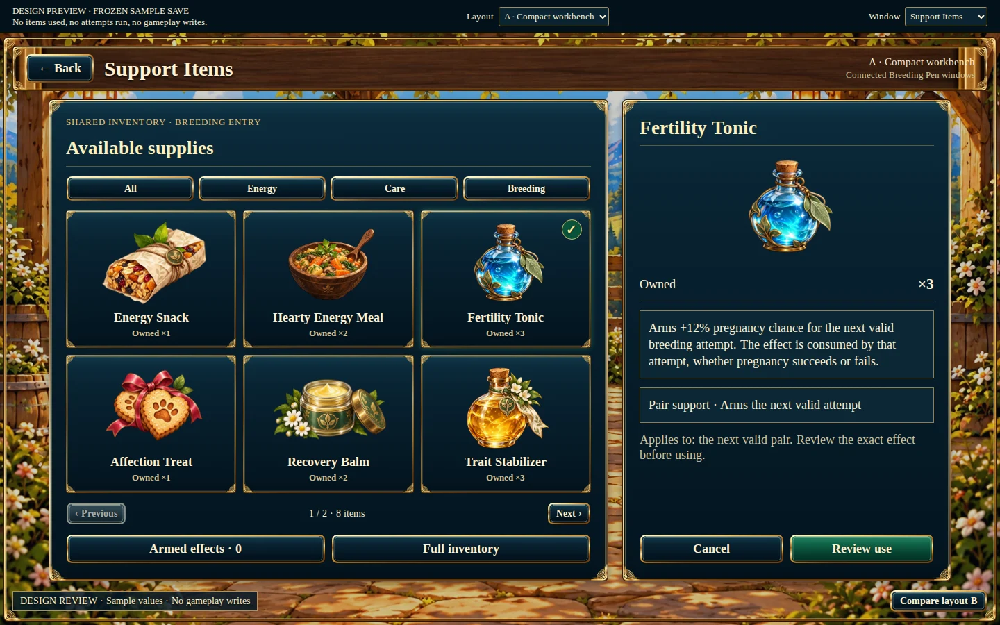
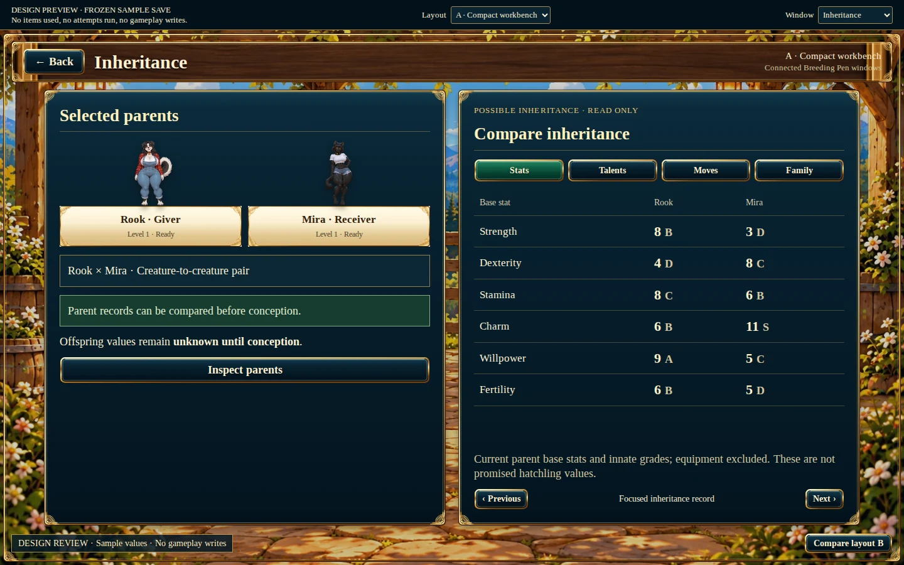
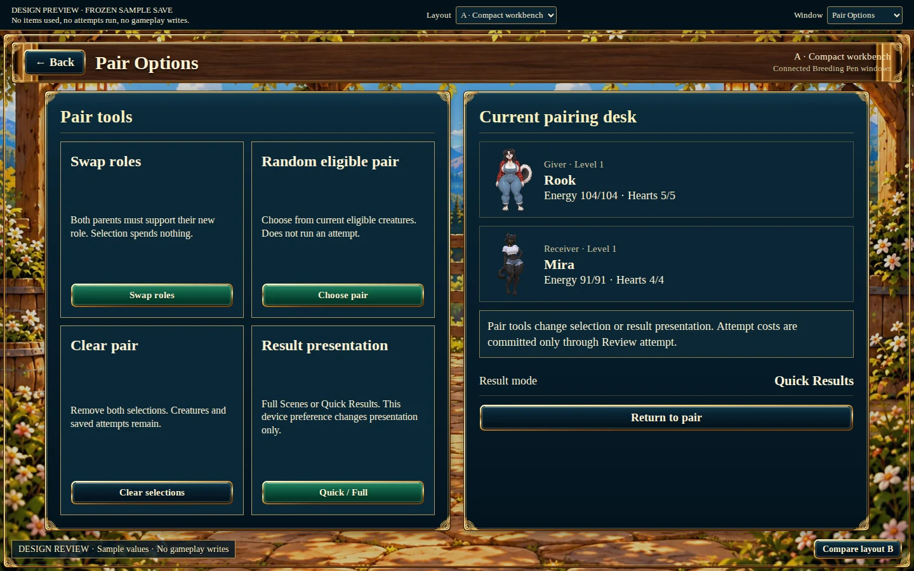
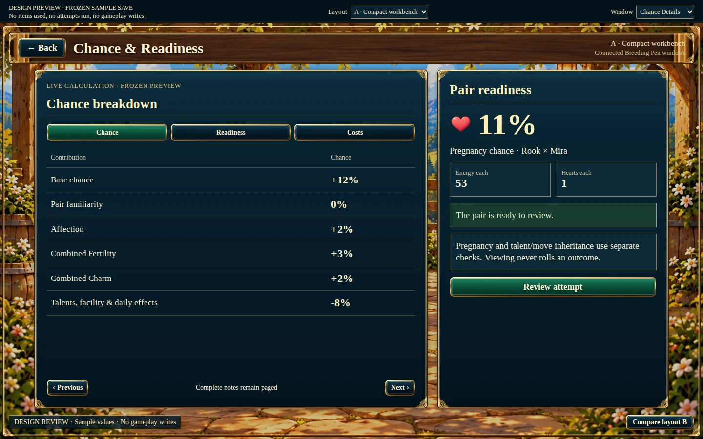
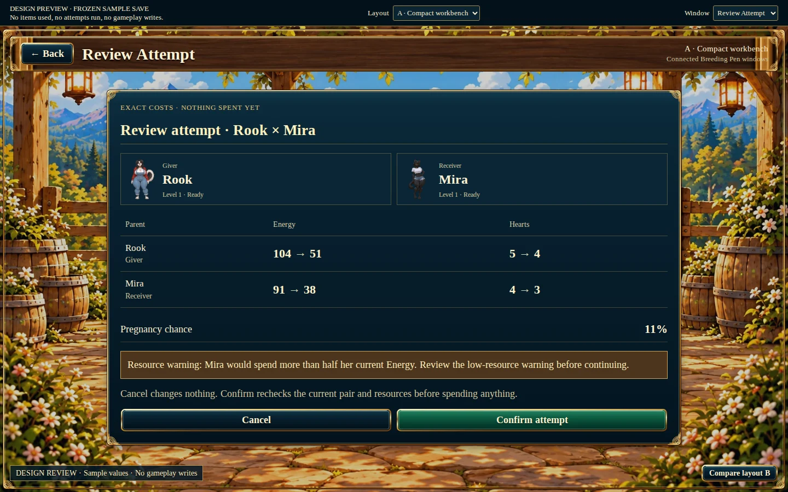
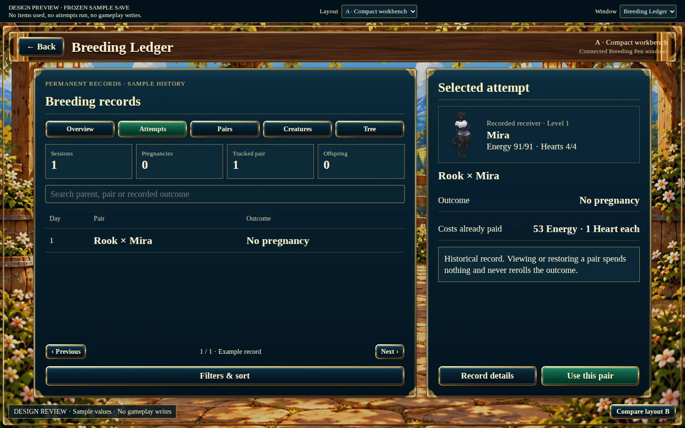

1. Inspect Parent

A/B are design prototypes using frozen sample data. Live gameplay windows have not been replaced. Click a screenshot to inspect it at full size, or open a layout to try its sections and candidate/item selection.







